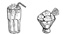
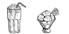
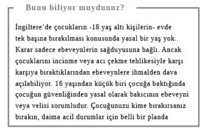
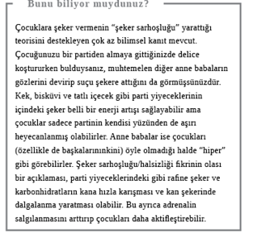
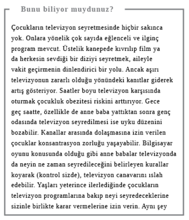

Çocuklar
Çocuk yetiştirmek, özellikle de yoğun bir iş hayatınız varsa son derece zordur. Bir yandan evle ilgili görevleri ve kendi ihtiyaçlarınızı yerine getirmeye çalışırken, bir yandan da herkesle “sözde” anlamlı vakit geçirmeye çalışmak tüm enerjinizi tüketebilir. Üstelik ebeveynlik konusunda verilen tavsiyeler de aklınızı iyice karıştıracak çelişkili fikirlerle doludur. İşte size uzman görüşü ve benim tam zamanlı çalışan bir anne olarak deneyimlerim üstüne kurulu 10 adet denenip test edilmiş önerim.
Bebekler ve Küçük Çocuklar
Çocukların mutluluğu sizi durmaksızın çekiştirmelerine teslim olmadan sürdürebilmenize bağlıdır ve mükemmel bir ebeveyn olmadığınız için hissettiğiniz yetersizlik duygularına direnmeniz de her şeyi daha iyi idare etmenizi sağlayabilir.
Bebek maması: Ev yapımı mı, hazır mı?
Küçükler için bol miktarda evde yapılmış besleyici yemeği püre etmeniz ve artanları hafta içi vermek üzere dondurucuda saklamanız gerektiğini elbette ki biliyorsunuz ama koşuşturmalı evlerde bu mümkün olmayabilir. Üstelik boş vaktinizi organik sebze doğrayarak, buzdolabı poşetleriyle boğuşarak geçirmek yerine bebeğinizle oynayarak geçirmeyi tercih edebilirsiniz.
Ticari olarak üretilen bebek mamalarına bazı çevreler hâlâ şüpheyle yaklaşıyor ama birçok ülkede bir yaş altı çocuklar için imal edilen gıdaların kompozisyonu sıkı yönetmeliklere bağlı. Tüm suni renklendiriciler, koruyucular ve tatlandırıcılar yasaklı. Şeker ve tuz seviyelerinin minimumda tutulması gerekiyor. Tarım ilacı kullanımı da sıkı kontrol altında. Evet, yiyecekler bakterileri öldürmek ve uzun raf ömrü kazandırmak için geçirilen ısıl işlemde bir kısım vitamini kaybediyor ama bu, diğer besin maddelerini etkilemiyor.
Bir yaş üstü çocuklar içinse kurallar daha rahat: Ürün etiketini dikkatle okuyun ve içerik konusunda aklınıza bir şeyin takılmadığından emin olun. İlave şeker, tuz ve doymuş yağ oranının yüksek olup olmadığına dikkat edin.
Yanıt: Hazır (gerektiğinde)

Bebekleri ağlarken kendi haline mi bırakmalı, rahatlatmalı mı?
Bu son derece tartışmalı ve duygusal bir konu; ama günümüz ebeveynlerinin başetmek zorunda kaldığı en büyük sorunlardan biri de uyku bölünmesi. Çalışmıyor ve gündüzleri bebeğinizin uyuduğu saatlerde uyuyabiliyorsanız, geceleri düzensiz uyuyan bebekle başetmeniz çok zor olmayabilir. Ama işe gitmeniz gerekiyorsa bu durum sizi takatsiz bırakabilir.
Bazı uzmanlar beyinleri yüksek seviyelerde stres hormonlarına maruz kalacağı için ağlayan bebekleri kendi haline bırakmanın uzun vadede zararlı olabileceğini söylüyor. Ama bazıları da, Tanya Byron’ın Ekim 2010’da The Times makalesinde belirttiği gibi, bu savı destekleyen çalışmaların, yetimhane gibi olumsuz ortamlarda gerçekleştirildiğini vurguluyor.
Bebeği saatler boyu ağlamaya terk etmek herkes için streslidir ama bazı ebeveynler bebeklerinin ağlamasını duymaya hiç dayanamaz, onları hemen rahatlatmayı tercih ederler. Bu ebeveynler iyi bir uyku çekemeden geçen ayların sonunda “kontrollü ağlamaya” geçiş yapabilir. Kontrollü ağlama, yeniden uykuya dalana kadar ağlayan bebeğe karışmama veya kendi kendine uyuyana kadar giderek uzayan aralıklarla bebeği rahatlatmaya gitme şeklinde olabilir. Talep edildiği anda çocuklarına ilgi göstermeye devam edenlerse sonunda kendilerini evde borusunu öttüren “küçük imparatorlarla” baş başa bulabilirler.
Annemin tavsiyesi, bebeğin yatma vaktinde yaklaşık 20 dakika ağlamasına izin vermek ve kendini, sızlanma şeklindeki ağlama ile bir terslik olduğuna işaret eden gürültülü, stresli ağlama arasındaki farkı anlayacak şekilde eğitmekti. Ben bu tavsiyeyi ve yemek, banyo, masal, şarkı, yatma gibi gece rutinlerinin önemli olduğunu söyleyen arkadaşlarımı dinledim. Daima. Çocuklarımın ikisi de yaklaşık sekiz haftalıktan itibaren gece boyu uyudu ve gece 11 gibi geç saatte beslenip sabah neredeyse 5’e kadar uyanmadılar.
Yanıt: Kendi haline bırakmalı (kısa süreli olarak)

Bebek yatakta mı yatmalı, bebek karyolasında mı?
Tıpkı ağlayan bebeği kucağa almak gibi bu da tartışmalı ve duygusal bir konu. Uzmanların bu konudaki tavsiyesi, bebeklerin ilk altı ay boyunca ebeveyn odasında karyolada uyumaları yönünde. Ama odada sigara içiliyorsa o durumda bebek başka yerde yatırılmalı. Karyola ölümü riskini azaltmak için bebek sırt üstü yatırılmalı ve ayakları karyolanın ayakucuna getirilip battaniye omuzdan yukarı çıkmayacak şekilde kenarlardan sıkıştırılmalı. Bebeği yatakta yanınıza almanızın tehlikesi, nevresim altında veya aşırı sıcaktan boğulma riskiyle karşı karşıya kalmasıdır ki aşırı sıcak, karyola ölümünde de riski arttırır. Resmi öneriler, içki içtiğiniz veya ilaç aldığınız takdirde de bebekle yatak paylaşmamanız yönünde.
Gece yatakta bebeğe sokulmak, özellikle de emziriyorsanız, sıcacık bir duygudur ve çok bitkinseniz, gecede birkaç defa emzirmeye kalkıyorsanız son derece çekicidir ama bu, bebeğiniz için vazgeçmesi çok zor bir alışkanlığa dönüşecek, partnerinizle aranıza ise ilişki sorunlarına yol açabilecek, giderek büyüyen bir mesafe koyacaktır.
Yanıt: Karyolada

İçecekler kamışla mı içirilmeli, yudumlanarak mı?
Meyve suyu ve gazlı içeceklerdeki şeker ve asitler çocukların (ve sizin de) dişlerine kötü geldiği için, diş hekimleri bunları çocuklara yemek zamanı vermenizi ve yaşları uygun olduğunda içeceğin dişle daha az temas etmesi için kamış kullanmanızı öneriyor.
Yanıt: Kamışla

Milkshake mi, dondurma mı?
İçinde “süt” (milk) geçen her şey kulağa sağlıklı gibi geliyor ama söz konusu ticari olarak üretilen milkshake ile bir-iki top dondurma arasında tercih yapmaksa, ikincisi genelde daha sağlıklı. Milkshake’in içine süt dışında neler konduğunu bilmek zor olsa da bunun şekerli şurup olma ihtimali yüksektir. Ayrıca milkshake büyük ölçülerle satılırken dondurmayı tek bir top almak bile mümkündür. ABD’de satılan çikolatalı dondurma ve yerfıstığı ezmeli bir milkshake’in 2.000 kalori ve 25 dilim domuz pastırmasına eşit miktarda doymuş yağ içerdiği bildirildi. Her ne kadar içeriği üreticiden üreticiye büyük değişiklik gösterse de, örneğin McDonald’s’da yağı azaltılmış vanilyalı dondurma 150 kaloriyken, vanilyalı milkshake 220 kalori olabiliyor. Dilerseniz süt, muz ya da çilek gibi yumuşak meyve ve birkaç damla vanilya özütü kullanarak, kendi sağlıklı ve lezzetli milkshake’inizi yapabilirsiniz.
Yanıt: Dondurma

Tek bir spor mu, çok sayıda spor mu?
Enerji harcamak, formda kalmak ve uygun bir kiloyu korumak için tüm çocukların bolca egzersize ihtiyacı vardır ama bazı anne babalar evlatlarını geleceğin futbolcusu veya Wimbledon şampiyonu olarak hayal ederler. Peki, çocuklar tek bir aktiviteye mi yoğunlaşmalı yoksa çok sayıda aktiviteye mi?
İngiltere’de resmi ilkelere göre yardımsız yürüyebilen beş yaş altı çocuklar her gün, gün içine yayılmış sürelerle, en az 180 dakika (üç saat) iç veya dış mekânda aktif olmalılar. Koşma, bisiklete binme ve dans gibi çok sayıda aktiviteyle enerjilerini açığa çıkarmalılar. Çocuklar ve beş ila 18 yaş arası kişiler her gün hızlı yürüyüş, parkta oyun, koşma veya karate gibi kalp atışını yükseltecek en az 60 dakikalık egzersiz yapmalı.

Ayrıca jimnastik ve oyun parkı çubuklarından sarkma gibi kas güçlendirici; ip atlama, futbol oynama gibi kemik güçlendirici aktivitelere de katılmalılar.
Yanıt: Çok sayıda spor

Gençler
Ergenlik çağında çocuklarla yaşamak her zaman kolay olmayabilir, onlara zaman zaman özgürlük tanımak ise daha mutlu bir aile yaşamına kavuşmanızı sağlayabilir.
Bilgisayar/televizyon yatak odasında mı olmalı, salonda mı?
Çocuklarının geç saatlere kadar cep telefonuyla mesajlaştığını ya da iPod dinleyerek uyuyakaldığını keşfetmiş anne babalar, 12 ila 16 yaş arası gençlerle yeni yapılan bir araştırmada, yüzde 98’lik bir oranın yatak odasında bir çeşit elektronik aygıt bulunduğunu söylemesine şaşırmayacaktır. Bu doğruysa uzmanlar önerilen sekiz ila 10 saatlik uykunun alınmadığından endişe ediyor ki bu da gençlerin sağlığı ve okulda dikkat toplama yetisi üzerinde zararlı etkiler yaratıyor. Uykusunu alamayan çocuklar gün içinde canları enerji verici nişastalı yiyecekleri çektiği için aşırı kilolu olma eğilimi gösteriyor. Oxford Üniversitesi’nden Profesör Susan Greenfield gibi karşı bir görüşü savunan bazı bilimciler, gençlerin dijital medyayı, sürekli bir bilgi/eğlence kaynağından diğerine geçiş yaparak tüketmelerinin gelişmekte olan beyinlerinin işleyişini etkileyebileceğini düşünüyor. Bunun olası sonuçları, iletişim becerilerinde azalma ve soyut düşünmeyi başaramama olabilir.
“Yabancı tehlikesi” denen risk gerçekte çok düşük olsa bile internet, tüm o inkâr edilemez cazibesine ve avantajlarına karşın çocukların ebeveynler tarafından onaylanmayan konulara ve kişilere erişmesine olanak sağlıyor. Ebeveynleri en çok endişelendiren de muhtemelen bu. Akıllı telefonların çocuklara istedikleri yer ve zamanda internete erişim vermesiyle birlikte takip iyice zorlaştı ama bazı aygıtlar ortak aile alanında bulundurulursa bu iş kolaylaşabilir. O durumda en azından neye ve ne süreyle erişim sağladıkları hakkında fikriniz olabilir. Katı bir yasak koymak veya çaresizlik içinde fişi çekmek yerine, bilgisayar kullanım süresi hakkında temel bazı kurallar üzerinde anlaşmanız daha yapıcı olacaktır. Bizim evde “Aygıtsız Pazar” günleri, ev ödevi için iyi amaçlı internet kullanımı ve birlikte izlemeye çalıştığımız TV programları veya filmler dışında, iPad’lere, oyun aletlerine ve diğer medya araçlarına ara verdiğimiz bir gün anlamına geliyor.
Yanıt: Salonda
Gençler: Geç vakte kadar uyumalı mı, kalkmalı mı?
Haftasonunu ev işlerini ve diğer işleri halletmeye çalışarak geçiriyorsanız, genç yaştaki çocuğunuzun öğlene kadar uyuduğunu görmek sinirinizi bozabilir. Ancak Oxford Üniversitesi’nden Profesör Russel Foster gibi bazı nörobilimciler, gençlerin vücut saatlerinin çocuk ve yetişkinlerden daha geride çalıştığını ve onların doğal nedenlerle daha geç yatıp geç kalktığını düşünüyor. Yapılan testler gençlerin ilerleyen saatlerde, erken saatlere kıyasla zihinlerinin daha açık olduğunu gösteriyor. “Erken uyandırıldıklarında adeta daimi bir ‘jetlag’ hali yaşıyorlar” diyor Profesör Foster. Bu pek çok ergen gencin anne ve babasının aşina olduğu bir hal. Hatta The Times’a göre bir İngiliz ortaokulu bunu önlemek için başlangıç saatini 10.00’a almış. Sonuç olarak devamlılıkta artış; mezuniyet sınav sonuçlarında ise büyük bir yükselme olduğu bildirilmiş.
Yanıt: Uyumalı

Ve son olarak…
Evet mi demeli, hayır mı?
Çocuğu olan herkes, sonu gelmez cips, şeker, gazlı içecek, sinema, fast-food ya da bilgisayarla ve TV ile vakit geçirme taleplerine sürekli “hayır” derken yaşanan duygusal savaşın yaralarını iyi bilir. Dolayısıyla arada bir hemen her şeye “evet” dendiği, “evet günlerinin” olması eğlencelidir. Bayramlar, doğumgünleri ve diğer özel günler bunun için idealdir. Böylece hem çocuklar memnun olur hem de tuhaf ve olmadık taleplerin hepsine “evet” diyemeyeceğinizi keşfetmeleri işin eğlencelerinden birine dönüşür.
Yanıt: “Evet” (arada bir)